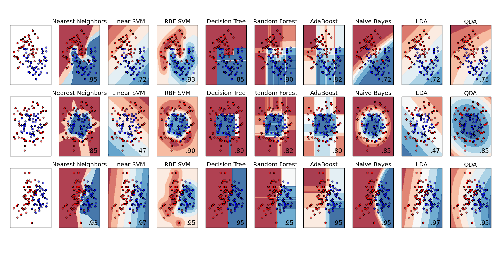
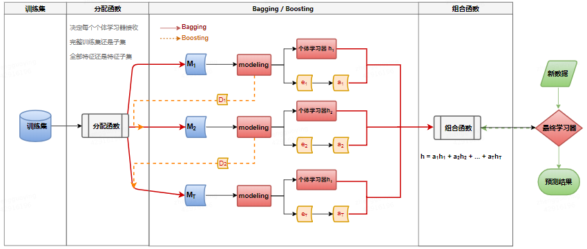
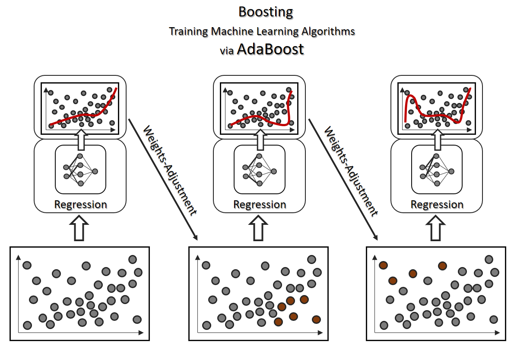
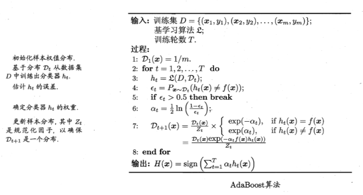
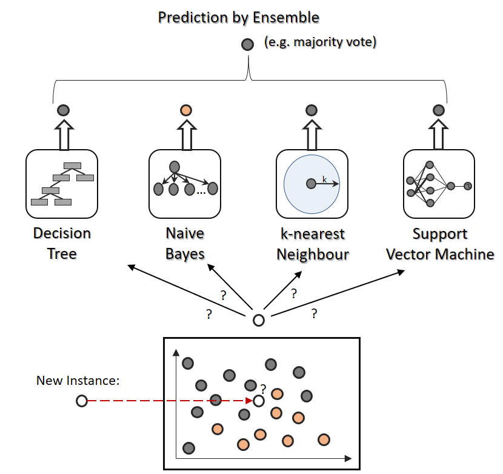
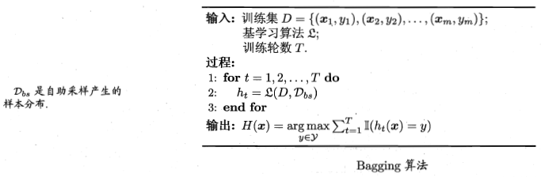
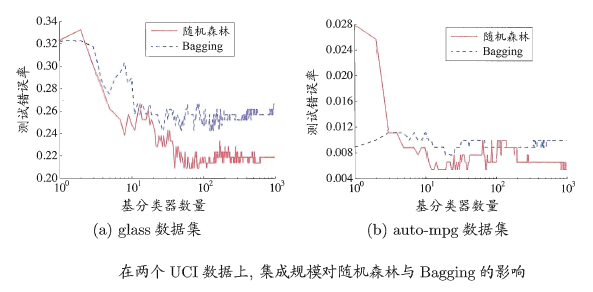
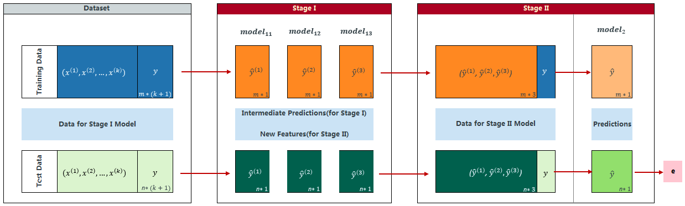
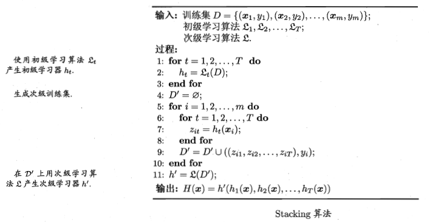

信息是用来消除随机不确定性的东西。 —— 香农
集成学习(Ensemble Learning)
集成学习通过构建并结合多个学习器来完成学习任务。 集成学习的一般结构： 先产生一组“个体学习器”，再用某种策略将它们结合起来。 个体学习器通常由一个现有的学习算法从训练数据产生。 如果个体学习器是“同质”的，即个体学习器由相同的算法生成，则这些个体学习器亦称“基学习器”，相应的学习算法称为“基学习算法”。 如果个体学习器是“异质”的，即个体学习器由不同的学习算法生成，则个体学习器常称为“组件学习器”或直接称为个体学习器。

根据个体学习器的生成方式，目前的集成学习大致可以分为两大类，一类是个体学习器间存在强依赖关系，必须串行生成的序列化方法，代表是Boosting. 另一类是个体学习器间不存在强依赖关系，可同时生成的并行化方法，代表是Bagging和Random Forest.

Boosting
Boosting 是一族可将弱学习器提升为强学习器的算法。 这族算法的工作机制类似： 先从初始训练集训练出一个基学习器， 再根据基学习器的表现对训练样本分布进行调整，使得先前基学习器做错的训练样本在后续得到更多的关注。 然后基于调整后的样本分布来训练下一个基学习器。 如此重复进行，直到基学习器数目达到事先指定的值T。 最后将这T个基学习器进行加权结合。


Boosting算法要求基学习器能对特定的数据分布进行学习。 这可通过”重赋权法(re-weighting)”实施，即在训练过程的每一轮，根据样本分布为每个训练样本重新赋予一个权重。
Boosting主要关注降低偏差， 因此Boosting能基于泛化性能相当弱的学习器构建出很强的集成。
Bagging与随机森林
欲得到泛化性能强的集成，集成中的个体学习器应尽可能相互独立；虽然“独立”在现实任务中无法做到(因为所有的分类器是为解决同一个问题训练出来的)，但可以设法使基学习器尽可能具有较大的差异。 给定一个训练数据集，一种可能的做法是对训练样本进行采样，产生出若干个不同的子集，再从每个数据子集中训练出一个基学习器。 这样，由于训练数据不同，我们获得的基学习器有望具有比较大的差异。 然而，为获得好的集成，又希望个体学习器不能太差。 如果采样出的每个子集都完全不同，则每个基学习器只用到了一小部分训练数据，甚至不足以进行有效学习，这显然无法确保产生出比较好的基学习器。 为了解决这个问题，可以考虑使用互相有交叠的采样子集。
不同于Boosting, Bagging是通过re-sampling实现对不同的数据分布进行学习的。
Bagging
Bagging(Bootstrap Aggregating)是并行式集成学习方法最著名的代表。 它直接基于Boostraping. 给定包含m个样本的数据集，有放回随机抽样得到含m个样本的采样集(初始训练集中有的样本在采样集里多次出现，有的则从未出现。 初始训练集中约有63.2%的样本出现在采样集中)。 照这样，可以采样出T个含m个训练样本的采样集，然后基于每个采样集训练出一个基学习器，再将这些基学习器进行结合。 这就是Bagging的基本流程。 在对预测输出进行结合时，Bagging对分类任务使用多数表决法，对回归任务使用简单平均法。 若分类预测时出现两个类收到同样票数的情形，则最简单的做法是随机选一个， 也可以进一步考察学习器投票的置信度来确定最终胜者。


假定基学习器的计算复杂度为$O(m)$, 则Bagging的复杂度大致为$T(O(m) + O(s))$, 考虑到采样与投票/平均过程的复杂度$O(s)$很小， 而T通常是一个不太大的常数，因此， 训练一个Bagging集成与直接使用基学习算法训练一个学习器的复杂度同阶，这说明Bagging是一个很高效的集成学习算法。 另外，与标准Adaboost只适用于二分类任务不同，Bagging能不经修改地用于多分类、回归等任务。
另外，自主采样过程还给Bagging带来了另一个优点： 由于每个基学习器只使用了初始训练集中约63.2%的样本，剩下约36.8%的样本可用作验证集来对泛化性能进行“包外估计”(out-of-bag estimate)。 包外样本还有其他用途。 例如当基学习器是决策树时， 可使用包外样本来辅助剪枝， 或用于估计决策树中各结点的后验概率以辅助对零训练样本结点的处理； 当基学习器是神经网络时， 可使用包外样本来辅助早期停止以减小过拟合风险。
Bagging主要关注降低方差，因此它在不剪枝决策树、神经网络等易受样本扰动的学习器上效用更为明显。
Random Forest
Random Forest是Bagging的一个扩展变体。 RF在以决策树为基学习器构建Bagging集成的基础上，进一步在决策树的训练过程中引入了随机属性选择。 具体来说， 传统决策树在选择划分属性时是在当前结点的属性集合中选择一个最优属性； 而在RF中，对基决策树的每个结点， 先从该结点的属性集合中随机选择一个包含k个属性的子集，再从这个子集中选择一个最优属性用于划分。 这里的参数k控制了随机性的引入程度： 若k = 0, 则基决策树的构建与传统决策树相同；若k = 1，则随机选择一个树型用于划分； 一般情况下， 推荐$k = log_{2}d$.

随机森林简单，容易实现，计算开销小，令人惊奇的是，在很多现实任务中展现出强大的性能，被誉为“代表集成学习技术水平的方法”。
相比Bagging中基学习器的“多样性”仅通过样本扰动(初始训练集采样)而来不同， 随机森林中的基学习器的多样性还来自属性扰动，这就使得最终集成的泛化性能可通过个体学习器之间差异度的增加而进一步提升。 此外，随机森林的收敛性与Bagging相似。 随机森林的起始性能往往相对较差。 这很容易理解，因为通过引入属性扰动， 随机森林中个体学习器的性能往往有所降低。 然而，随着个体学习器数目的增加， 随机森林通常会收敛到更低的泛化误差。 值得一提的是，随机森林的训练效率常常优于Bagging. 因为在个体决策树的构建过程中，Bagging使用的是“确定型”决策树，即在选择划分属性时要对结点的所有属性进行考察，而随机森林使用“随机型”决策树只需考察一个属性子集。

几个优点
准确率高
有效运行在大数据集上
可以处理高维特征样本，不需要降维
大数据集高维特征也相对稳定
可评估各特征在分类问题上的重要性
生成过程中可以获取到内部生成误差的一种无偏估计
可以处理缺失值
大多情况下不容易过拟合(双random-sampling)
缺点
- 在数据噪音比较大的情况下会过拟合，过拟合的缺点对于随机森林来说还是较为致命的。
森林中每棵树的生成(并行)
对于每棵树而言，随机有放回地从训练集中抽取$N$个训练样本(Bootstraping)作为该树的训练集。
如果每个样本的特征维度为$M$, 指定一个常数m << M, 随机从$M$个特征中选取$m$个特征。 每次基于这m个特征生成单棵树。
每颗树尽最大程度生长，没有剪枝
随机森林的错误率相关因素
任意两颗树的相关性： 相关性越大， 错误率越大
每棵树的分类能力： 每颗树的分类能力越强，整个森林的错误率越低
减小$m$, 树的相关性和分类能力会相应降低；增大$m$, 两者也会随之增大。 所以关键问题是如何选择最优的m。
袋外错误率(obb error)
上面我们提到，构建随机森林的关键问题就是如何选择最优的m，要解决这个问题主要依据计算袋外错误率oob error（out-of-bag error）。
随机森林有一个重要的优点就是，没有必要对它进行交叉验证或者用一个独立的测试集来获得误差的一个无偏估计。它可以在内部进行评估，也就是说在生成的过程中就可以对误差建立一个无偏估计。
我们知道，在构建每棵树时，我们对训练集使用了不同的bootstrap sample（随机且有放回地抽取）。所以对于每棵树而言（假设对于第k棵树），大约有1/3的训练实例没有参与第k棵树的生成，它们称为第k棵树的oob样本。
而这样的采样特点就允许我们进行oob估计，它的计算方式如下：
对每个样本，计算它作为oob样本的树对它的分类情况（约1/3的树）
以简单多数投票作为该样本的分类结果
最后用误分个数占样本总数的比率作为随机森林的oob误分率
1 | Put each case left out in the construction of the kth tree down the kth tree to get a classification. In this way, a test set classification is obtained for each case in about one-third of the trees. At the end of the run, take j to be the class that got most of the votes every time case n was oob. The proportion of times that j is not equal to the true class of n averaged over all cases is the oob error estimate. This has proven to be unbiased in many tests. |
oob误分率是随机森林泛化误差的一个无偏估计，它的结果近似于需要大量计算的k折交叉验证。
和其他算法的比较
v.s. CART
两者中的决策树均是二叉树。
| CART | RF |
|---|---|
| CART在树生成时，从特征集中挑选最优的特征分列 | RF在树生成时，会随机从特征集中挑选子特征集，再从该子集中挑选最优特征分裂 |
| CART uses different stopping rules for tree growth, which ususally leads to a much shallower tree | RF中每颗子树都完全生长直到叶结点“纯”。 因此RF中的子树可能会比较大 |
此外，RF相比CART，有两点新增：
新增bagging. 即RF基于Boostraping构建出T个与原数据集相同大小的训练集。然后在每个训练集上构建tree model. 最终将所有树集成森林。
在每颗树生成时，节点分裂仅使用部分特征。
结合策略
简单平均
加权平均
绝对多数投票法
加权投票法
类标记
类概率
有趣的是， 虽然分类器估计出的类概率值一般都不太准确， 但基于类概率进行结合往往比直接基于类标记进行结合性能更好。
学习法
当训练数据很多时，一种更为强大的结合策略是使用“学习法”，即通过另一个学习器来进行结合。 Stacking是学习法的典型代表。 把个体学习器称为初级学习器， 用于结合的学习器称为次级学习器或元学习器。
Stacking 先从初始数据集训练出初级学习器， 然后“生成” 一个新数据集用于训练次级学习器。 在这个新数据集中， 初级学习器的输出被当作样例输入特征， 而初始样本的标记仍被当作样例标记。

在训练阶段，次级训练集是利用初级学习器产生的，若直接用初级学习器的训练集来产生次级训练集，则过拟合风险比较大； 因此，一般通过交叉验证或留一法这样的方式， 用训练初级学习器未使用的样本来产生次级学习器的训练样本。 以k折交叉验证为例。

初始训练集D被随机划分为k个大小相似的集合，$D_1,D_2,\cdots,D_k$. 令$D_j$和$\bar{D_j}$分别表示第j折的测试集和训练集。
给定T个初级学习算法，初级学习器$h_{t}^{j}$为在$\bar{D_j}$上使用第t个学习算法而得。
对每个样本，$x_i$, 令$z_{it} = h_t(x_i)$ 表示$x_i$在第t个初级学习器上的预测值。 则由$x_i$产生的次级训练集为 ${z_i} = (z_{i1},z_{i2},\cdots,z_{iT})$
在整个交叉验证结束后，从这T个初级学习器产生的次级训练集是$D^{‘} = {({z_i},y_i)}_{i = 1}^{m}$
思考
1 设计一种能提升KNN性能的集成学习算法
2 MultiBoosting将Adaboost作为Bagging的基学习器， Iterative Bagging 将Bagging作为Adaboost的基学习器。 比较两者的优缺点。
MultiBoosting由于集合了Bagging，Wagging，AdaBoost，可以有效的降低误差和方差，特别是误差。但是训练成本和预测成本都会显著增加。Iterative Bagging相比Bagging会降低误差，但是方差上升。由于Bagging本身就是一种降低方差的算法，所以Iterative Bagging相当于Bagging与单分类器的折中。
3 随机森林为什么比决策树Bagging集成的训练速度更快
随机森林不仅会随机样本，还会在所有样本属性中随机几种出来计算。这样每次生成分类器时都是对部分属性计算最优，速度会比Bagging计算全属性要快。
4 Bagging通常为何难以提升朴素贝叶斯分类器的性能
Bagging主要是降低分类器的方差，而朴素贝叶斯分类器没有方差可以减小。对全训练样本生成的朴素贝叶斯分类器是最优的分类器，不能用随机抽样来提高泛化性能。
5 GradientBoosting是一种常用的Boosting算法，试分析其与AdaBoost的异同。
相同在于：都要生成多个分类器以及每个分类器都有一个权值，最后将所有分类器加权累加起来。
不同在于：AdaBoost通过每个分类器的分类结果，改变样本权重用于生成新的分类器和计算对应权值，但用于训练的样本本身不会改变； GradientBoosting将每个分类器对样本的预测值与真实值的差值传入下一个分类器来生成新的分类器和对应权值(这个差值就是下降方向)，而每个样本的权值不变。
6 试编程实现Bagging，以决策树桩为基学习器。 iris数据集
7 编程实现AdaBoost，以不剪枝决策树为基学习器。 iris数据集